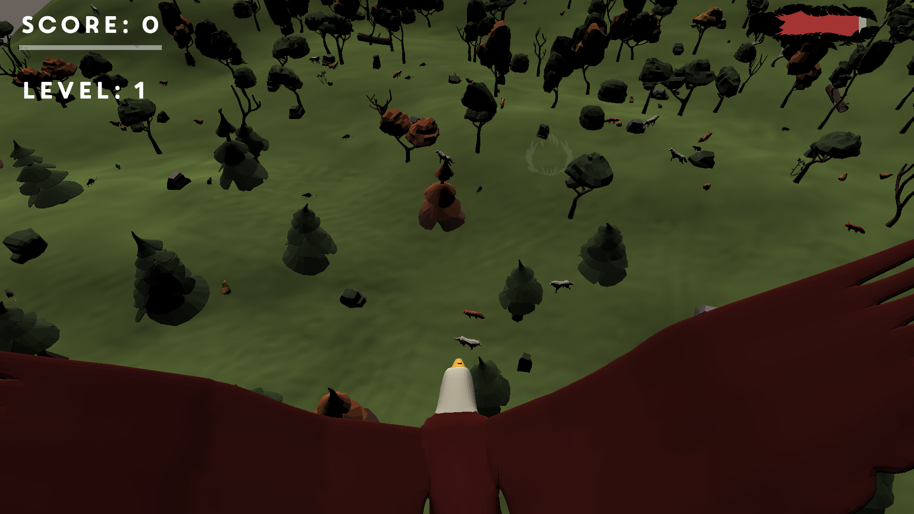
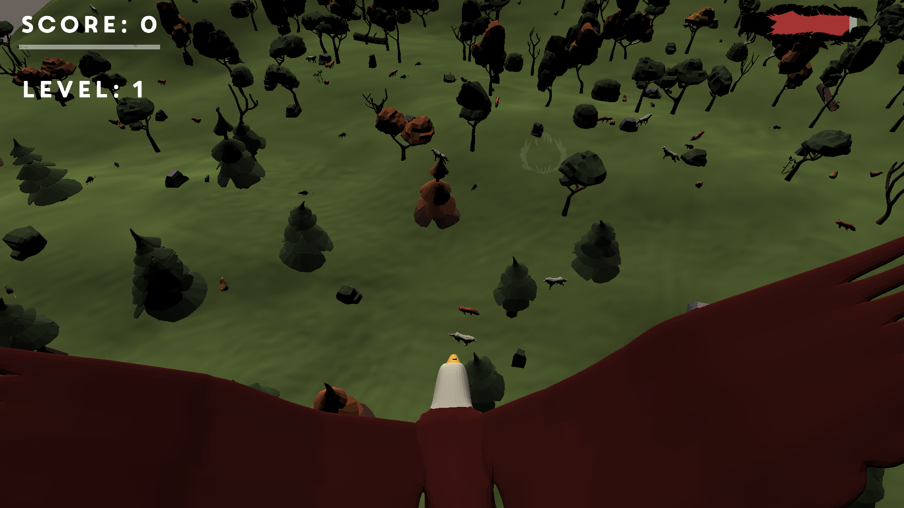

Eagle Eye
This game was made for the Tobii C4 eye-tracking device and makes full advantage of its features.
These Features are mapping the player’s head position to the eagle’s head,
HUD-Elements that disappear when you are not looking for it and of course the main mechanic of the game : Catching pray with your eyes to feed and grow the eagle.
This Game was coded in Unity, together with a friend.
 
